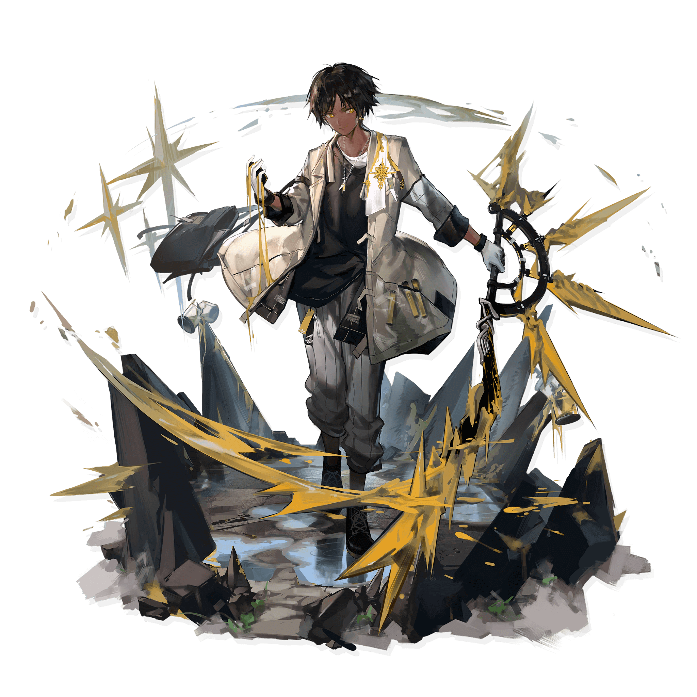

Thorns
"Watch closely, these are the Supreme Arts of Iberia!"
Thorns, a front-line combatant for Rhodes Island, is proficient in swordsmanship and
pharmacology. Born in the Iberian hinterland, Thorns left his hometown in the midst of local
religious strife. After leaving the Iberian region, he was invited to join Rhodes Island.
Insane constant-DPS with magical DoT, one of the most general operators in the game.

